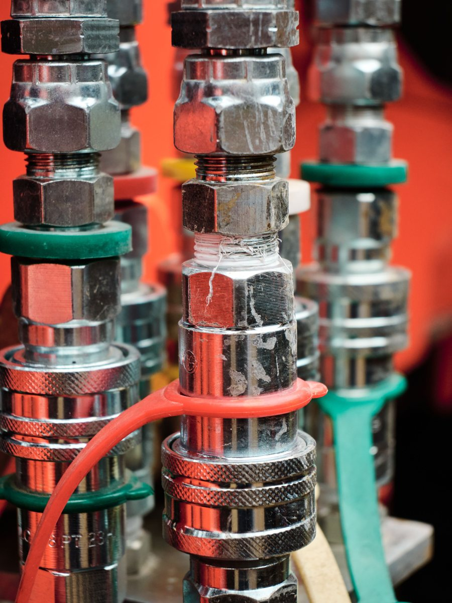
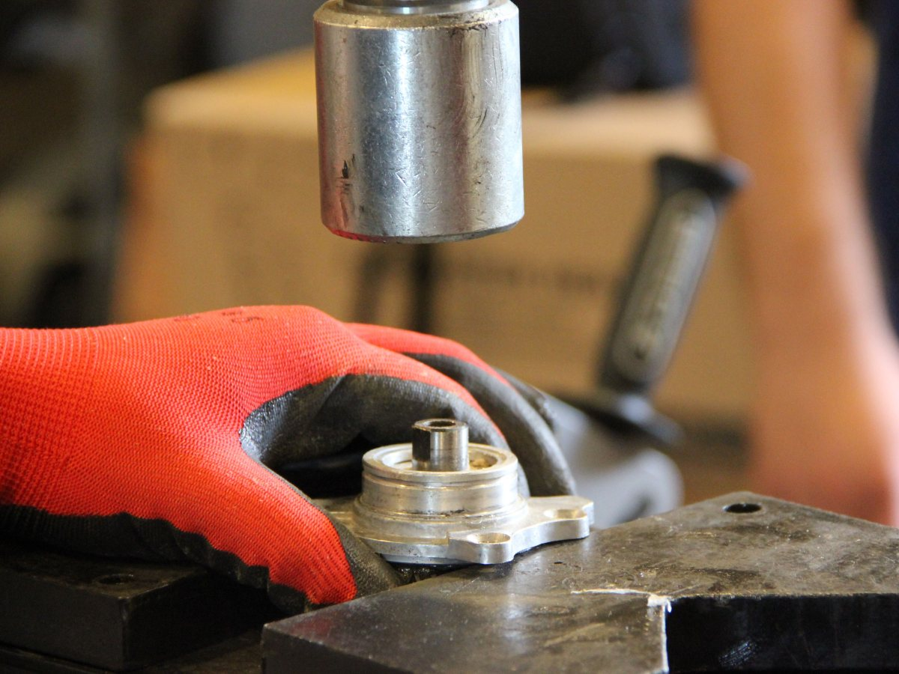
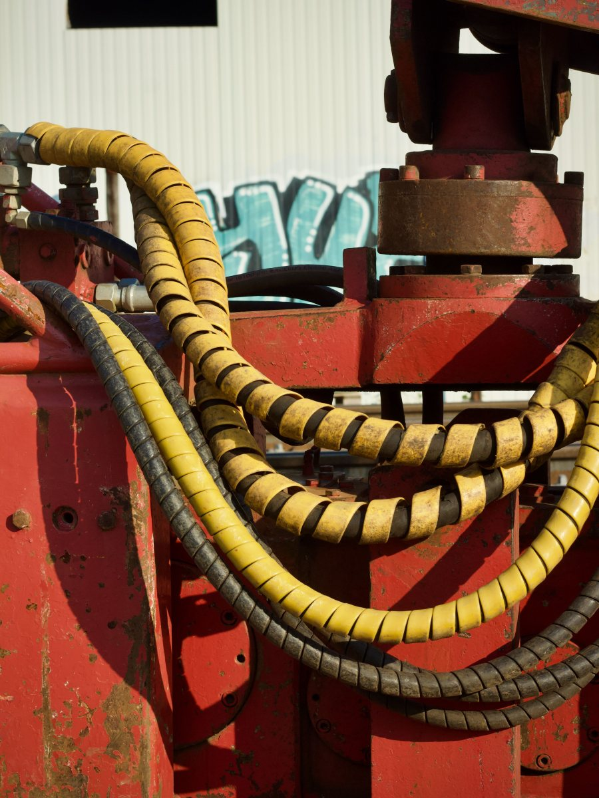
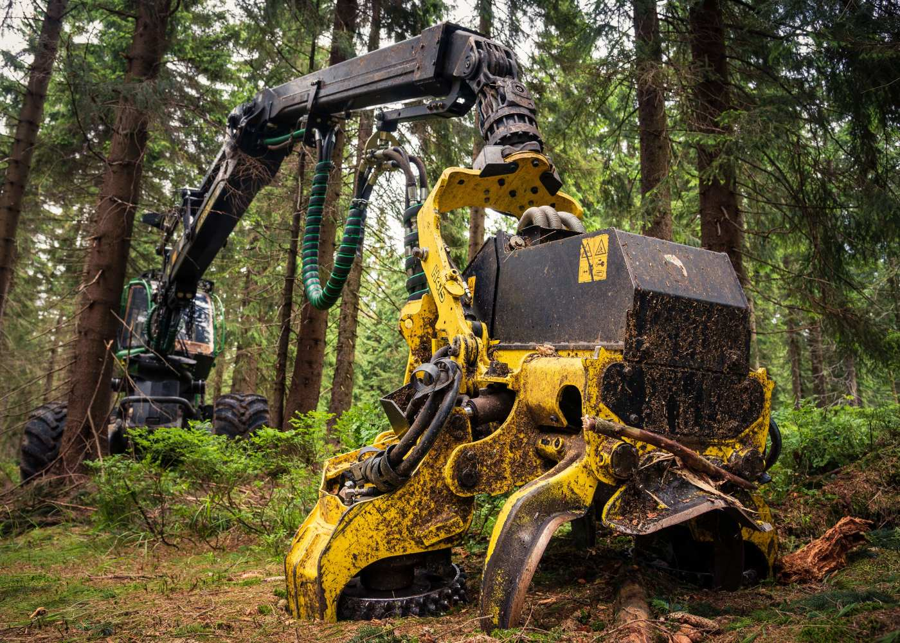
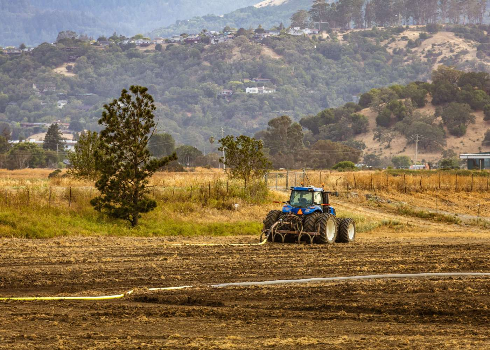
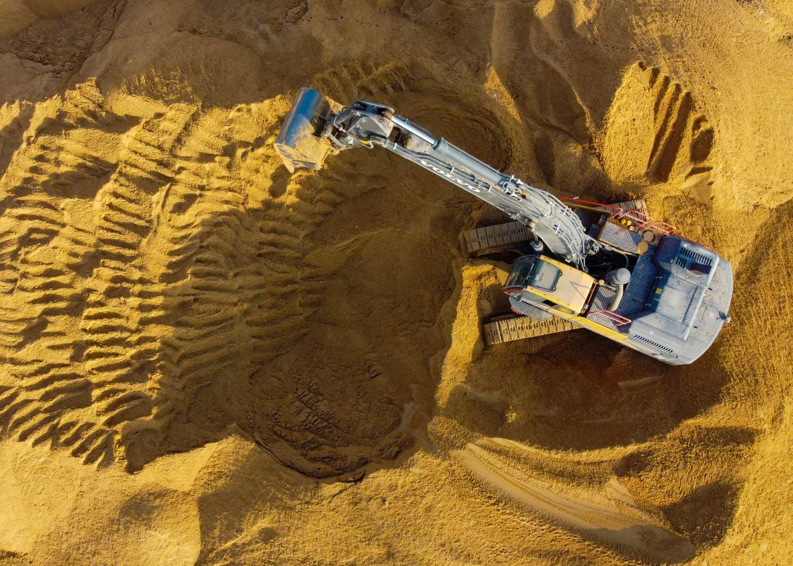

Mangueras hidráulicas · Loncoche, Araucanía
Tu manguera, prensada al momento.
Trae la reventada o ármala aquí, y espérala. La medimos, la cortamos, la limpiamos, la prensamos y la probamos: de 1/4" a 2", para maquinaria forestal, agrícola y de construcción.
Armar mi manguera Escribir por WhatsApp
- 1/4" — 2"9 medidas
- 420 barla más fuerte
- ≈ 20 minpor manguera
- 80 kma terreno
Una manguera reventada no cuesta lo que vale la manguera. Cuesta la faena parada.
Por eso la armamos mientras esperas, y si la máquina no puede venir, vamos nosotros.
01Arma tu manguera
Pieza por pieza, como en el mesón.
Elige la manguera, la medida, la punta de cada lado y el largo. La vas viendo armada, con la presión que aguanta, cuánto se corta y cuánto sale.
Para armarla aquí hace falta JavaScript. También sirve mandarnos una foto de la manguera vieja: de la impresión y de las dos puntas.
Mandar fotos por WhatsApp¿Qué manguera necesito? La tabla de presiones
| Medida | 1SN | 2SN | 4SP | 4SH |
|---|---|---|---|---|
| 1/4" −04 | 225 | 400 | — | — |
| 3/8" −06 | 180 | 330 | 445 | — |
| 1/2" −08 | 160 | 275 | 415 | — |
| 5/8" −10 | 130 | 250 | 350 | — |
| 3/4" −12 | 105 | 215 | 350 | 420 |
| 1" −16 | 88 | 165 | 280 | 380 |
| 1 1/4" −20 | 63 | 125 | 210 | 325 |
| 1 1/2" −24 | 50 | 90 | 185 | 290 |
| 2" −32 | 40 | 80 | 165 | 250 |
Si dudas entre dos, se elige la de más presión. Y se cambia por la misma norma que traía: si la vieja era 4SP, la nueva también.
02¿Qué terminal es el tuyo?
Primero se mira el asiento. Después se mide.
Un BSP de 1/2" y un ORFS de −08 miden casi lo mismo y no calzan. Por eso se empieza por cómo sella la punta; recién ahí la rosca dice la medida.
-
1Toma la manguera vieja. ¿Cómo es la punta donde sella?
-
2¿La rosca está por fuera o por dentro?
Si mides en la máquina y no en la manguera, la manguera lleva la contraria: rosca por fuera en la máquina, hembra en la manguera.
-
3Mide la rosca con pie de metro
mm
Lo que tienes
JIC 37° macho, 3/4"-16 UNF
Terminal −08 · va en manguera de 1/2"
Lo normal es que la rosca y la manguera tengan el mismo número. Si tu manguera vieja dice otra medida, manda esa.
¿Sigue la duda? Manda una foto con el pie de metro puesto →
Sin JavaScript: mira el asiento de la punta, mide la rosca con pie de metro y mándanos la foto con la medida. Te decimos cuál es.
03Del mesón
¿Ya sabes lo que necesitas? Arma tu lista.
Mangueras por metro, terminales, acoples, adaptadores y servicios. Sumas lo que quieras y nos llega todo en un solo WhatsApp, con el total.

Mangueras por metro
Se corta a la medida. El armado con terminales va aparte o en el configurador.
Manguera 1SN · una malla
EN 853 1SN · SAE 100R1AT. Retornos, implementos agrícolas y circuitos de media presión. 1/4" a 2"
desde $3.500 el metro
CotizarManguera 2SN · dos mallas
EN 853 2SN · SAE 100R2AT. La de casi toda la maquinaria: cilindros, motores, grúas, tractores. 1/4" a 2"
desde $4.500 el metro
CotizarManguera 4SP · cuatro espirales
EN 856 4SP. Muy alta presión con golpes: excavadoras, harvester, grúas forestales. 3/8" a 2"
desde $9.800 el metro
CotizarManguera 4SH · cuatro espirales pesada
EN 856 4SH. Extra alta presión en diámetros grandes: líneas principales. 3/4" a 2"
desde $18.900 el metro
Cotizar
Terminales prensables
El codo de 45° vale 1,35 veces el recto y el de 90°, 1,45. Para manguera de espirales, 1,3 veces.
Terminal JIC 37° hembra giratoria
SAE J514 · asiento cónico de 37°. Prensable, con casquillo. 1/4" a 2"
desde $2.900 c/u
CotizarTerminal JIC 37° macho
SAE J514 · asiento cónico de 37°. Prensable, con casquillo. 1/4" a 2"
desde $2.900 c/u
CotizarTerminal ORFS hembra giratoria
SAE J1453 · cara plana con O-ring. Prensable, con casquillo. 1/4" a 1 1/2"
desde $3.300 c/u
CotizarTerminal ORFS macho
SAE J1453 · cara plana con O-ring. Prensable, con casquillo. 1/4" a 1 1/2"
desde $3.300 c/u
CotizarTerminal BSP hembra giratoria
BSPP · asiento cónico de 60°. Prensable, con casquillo. 1/4" a 2"
desde $2.900 c/u
CotizarTerminal BSP macho
BSPP · asiento cónico de 60°. Prensable, con casquillo. 1/4" a 2"
desde $2.900 c/u
CotizarTerminal NPT macho
NPTF · rosca cónica, sella en la rosca. Prensable, con casquillo. 1/4" a 2"
desde $2.800 c/u
CotizarTerminal Métrica 24° L hembra giratoria
DIN 3861 serie liviana · cono 24° con O-ring. Prensable, con casquillo. 1/4" a 1 1/2"
desde $3.200 c/u
CotizarTerminal Métrica 24° S hembra giratoria
DIN 3861 serie pesada · cono 24° con O-ring. Prensable, con casquillo. 1/4" a 1 1/4"
desde $3.500 c/u
CotizarTerminal Brida SAE 61
SAE J518 código 61 · 3.000 psi. Prensable, con casquillo. 1/2" a 2"
desde $8.600 c/u
CotizarTerminal Brida SAE 62
SAE J518 código 62 · 6.000 psi. Prensable, con casquillo. 1/2" a 2"
desde $11.300 c/u
Cotizar
Protecciones por metro
Desde 1" el metro vale 1,5 veces.
Acoples rápidos
Acople ISO A macho (punta)
Tractores e implementos. Rosca NPT. 3/8" a 1"
desde $5.400 c/u
CotizarAcople ISO A hembra (cuerpo)
Con válvula. Rosca NPT. 3/8" a 1"
desde $7.400 c/u
CotizarAcople cara plana macho
No gotea al desconectar. Minicargadores, martillos. 1/2" a 1"
desde $12.900 c/u
CotizarAcople cara plana hembra
El par del anterior. 1/2" a 1"
desde $14.900 c/u
CotizarTapa guardapolvo
Para que el barro no entre al acople. 1/2" a 3/4"
desde $1.500 c/u
Cotizar
Adaptadores
Adaptador JIC macho × NPT macho
El puente más pedido. 1/4" a 1"
desde $2.000 c/u
CotizarAdaptador JIC macho × BSP macho
Con asiento de 60° del lado BSP. 1/4" a 1"
desde $2.200 c/u
CotizarAdaptador ORFS macho × JIC macho
Para pasar de una norma a otra. 1/4" a 1"
desde $2.800 c/u
CotizarCodo 90° JIC macho × hembra giratoria
Para salir de un lugar apretado. 1/4" a 1"
desde $3.200 c/u
CotizarTee JIC macho
Para sacar una derivación. 1/4" a 1"
desde $3.800 c/u
CotizarUnión JIC macho × macho
Para unir dos mangueras. 1/4" a 1 1/4"
desde $1.700 c/u
CotizarTapón JIC hembra
Para cerrar una línea mientras se repara. 1/4" a 1"
desde $1.300 c/u
Cotizar
Servicios
Prensado de terminal
Traes la manguera y el terminal; lo prensamos y lo medimos.
$2.000 c/u
CotizarAtención fuera de horario
Urgencias de noche, domingo o festivo. Se suma a lo que se arme.
$15.000 c/u
CotizarVisita a terreno
Hasta 20 km de Loncoche: vamos, medimos, armamos y montamos.
$25.000 c/u
CotizarKilómetro adicional
Desde el km 21, ida y vuelta.
$700 el km
CotizarPrueba de presión con certificado
Para faenas que lo piden por escrito.
$6.000 c/u
Cotizar
Precios referenciales con IVA. Lo que no aparece, también lo conseguimos: pregunta.
04Cómo se hace
Veinte minutos entre la rota y la nueva.
-
01
Identificar
Miramos la vieja: norma de cada punta, medida, largo y desfase. Si no la puedes sacar, la medimos en la máquina.
-
02
Cortar
Con sierra abrasiva y a escuadra. Un corte chueco hace que la manguera no entre entera en el casquillo, y ahí es donde se suelta.
-
03
Limpiar
Disparamos un proyectil de espuma por dentro, con aire. La viruta del corte es lo que después raya bombas y válvulas.
-
04
Prensar
Ocho dados cierran el casquillo al diámetro del fabricante. Lo medimos con pie de metro: si no da la medida, no sale.
-
05
Probar y tapar
Revisamos, marcamos el código y tapamos las dos puntas, para que no le entre tierra en el camino.


05Donde se rompen
En la faena, en el potrero y en la obra.



Si la máquina no puede venir, vamos.
Hasta 20 km de Loncoche, la visita vale $25.000: vamos, medimos, armamos y la dejamos montada. Más lejos, se suma cada kilómetro de ida y vuelta.
Toca un pueblo en el mapa:
Villarrica
≈ 55 km por camino · visita referencial $74.000
Distancias estimadas. El valor se confirma por WhatsApp antes de salir.
06Quién te atiende
Oficio de faena, trato de mesón.
Robur viene de años arreglando maquinaria en faenas forestales y campos de la zona: el skidder que se queda parado a las siete de la tarde, el tractor con la cosecha encima, la retro en medio de una obra. Sabemos lo que cuesta una máquina detenida, y trabajamos para que pare lo menos posible.
- 12años en mantención de maquinaria
- 9normas de terminal en el mesón
- 4tipos de manguera, de 1/4" a 2"
Te decimos la verdad
Si la manguera no necesita cambio, te lo decimos. Y si el problema es otro, también.
Te explicamos sin enredar
Qué falló, por qué y cómo evitar que vuelva a pasar. Con las palabras que hagan falta, ni una más.
Cumplimos la hora
Si quedamos a las seis, a las seis está lista. Si algo se atrasa, avisamos antes.
Contestamos
WhatsApp todos los días para urgencias. Una faena parada no espera al lunes.
Cuidamos tu máquina
Puntas tapadas, nada de viruta, nada de aceite en el suelo de tu galpón.
Te enseñamos a medir
Para que la próxima vez no pierdas el viaje: con una foto y dos medidas ya sabemos qué traer.
07Dónde estamos
En Loncoche, a pasos de la Ruta 5.
- +56 9 0000 0000
- Llamar
- +56 9 0000 0000
- Dirección
- Loncoche, Araucanía
- Horario
- Lunes a viernes 8:30 – 18:30
- Sábado 9:00 – 14:00
- Urgencias por WhatsApp, todos los días
Antes de venir
- Trae la manguera vieja, aunque esté reventada: ahí está todo lo que necesitamos.
- Si no la puedes sacar, mándanos tres fotos: la impresión de la manguera y las dos puntas.
- Mide el largo estirada, de punta a punta.
Lo que más nos preguntan
¿Pueden hacerla con la manguera vieja como muestra?
Sí, es lo mejor. De la vieja sacamos la norma de cada punta, la medida, el largo y el desfase de los codos. Aunque esté reventada o cortada.
¿Cuánto demora?
Una manguera común, unos veinte minutos desde que llega la vieja. Si son varias o llevan terminales poco comunes, te damos la hora al tiro.
¿Tienen garantía?
Sí: el prensado tiene seis meses de garantía. Si un terminal se suelta por el prensado, la rehacemos sin costo.
¿Hacen factura?
Sí, boleta o factura. Para empresas y faenas también trabajamos con orden de compra.
¿Atienden de noche o el fin de semana?
Para urgencias, sí: escríbenos por WhatsApp. Fuera de horario se suma un recargo, que te decimos antes.
¿Qué pasa si no sé qué terminal tiene?
Usa el identificador de esta página, o mándanos una foto con el pie de metro puesto en la rosca. Con eso basta.